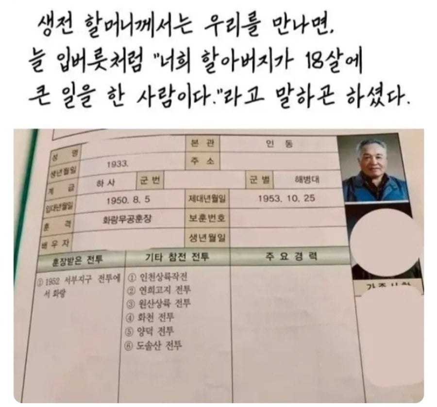

연희고지 전투는 한국군 생존자가 26명

연희고지 전투는 한국군 생존자가 26명
감사합니다
아니 참전 전투 봐 미쳤다
17에 입대
이런분이 바로 장군감인데
20살에 훈장 ㄷㄷ
저정도로 했는데도 최고 무공훈장을 못받은것에 대해.
일반 병사가 태극무공훈장을 받은 사례가 이명수 상사 딱 한건 있는데(살아서)
내용을 들으면 총맞아도 안죽는 콜오브듀티 주인공 그 자체임.
진지가 포위가 된 상태에서 결사대(죽어서 돌아오지 않겠다는) 12명을 선발해서
북한군 진영으로 야밤에 침투함.
이동하다가 쉬고 있는 북한 1개 소대를 보고, 다 죽이고 한놈만 살려서
야간 암구호를 다 뽑아냄
알아 낸 암구호로 내부까지 들어가서 북한군 주력 무장인 전차 뚜껑을 열고
안으로 수류탄을 던져 넣어서 전차를 다 완파시킴(3대)
복귀하는 중에 북한군에게 대원이 포로로 잡혔는데
다시 적진으로 돌아가서 아군 대원을 전부 구출하고 이 과정에서 1대 중대를 섬멸함
그리고 후에 살아남은 대원들이 이를 증언해주며 태극무공훈장까지 받음
(이 전투기록은 북한쪽에도 그대로 남아있음.)
이분은 2015년까지 사시다가 노환으로 별세하심
예비역 중위 계급임에도 불구하고 사상 최초로 육군참모총장이
장의위원장을 맡는 육군장으로 영결식을 거행함.
내가 이걸 왜 다 아냐면, 당시 내 부대가 이 행사에 참여를 했었거든.
무지해서 아무것도 모르던 내가 과거 전쟁영웅의 이야기를 들으면서도
당시 나는 게임으로 이렇게 하라고 해도 못한다고 생각했음
영화한편 뚝딱이네
박현준!!! 가서 암구호 알아내!!
박현준!!! 가서 주권 이병 구출해와!!!
박현준 : 저도 이건 좀
개붕이 댓글 듣고 찾아보니 영덕지구전투였네 ㄷㄷㄷ
ㅇㅇ포항
저때 못막았으면 낙동강 다 털려서 방어선이고 뭐고 없어서 제주도 갔을거임
그러니 최고 훈장을 받은 케이스가 된거고
게임이어도 치트안쓰면 저렇게는 못하겠다 시발 ㅋㅋㅋㅋ
와 전쟁의 신이네
진짜 해병시절
박현준 실사버전이네
우와........